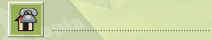
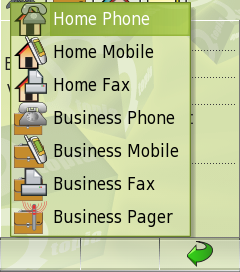

|
Home · All Namespaces · All Classes · Grouped Classes · Modules · Functions | |
The QIconSelector class provides an icon-based combo box implementation. More...
#include <QIconSelector>
Inherits QToolButton.
The QIconSelector class provides an icon-based combo box implementation.
QIconSelector operates similarly to a combo box but it has an important difference. It deals with information that is represented as both an icon and as text. The widget itself displays only icons while the pop-up selector displays both icon and text. This makes it suitable for placement in areas where there is limited horizontal space.
Here is a QIconSelector next to a text field. When down, it takes up very little room.

Here is the pop-up selector. Both the icons and text are visible.

Constructs a QIconSelector with the given parent.
Constructs a QIconSelector with initial icon icn and the given parent.
Destroys a QIconSelector.
This signal is emitted when an item is activated. The item is indicated by index.
Removes all items.
Note that no icon will be visible.
Returns the number of items the QIconSelector contains.
Returns the index of the currently selected item. This will be -1 if no items are selected.
See also setCurrentIndex().
Returns the icon that is being displayed.
See also setIcon().
Adds an item to the QIconSelector with icon icn and text text.
Closes the pop-up selector and selects the item at index index.
Closes the pop-up selector.
Opens the pop-up selector.
Removes the item at index index.
Sets the current selected item to the item at index index. Set index to -1 to select no items. Note that no icon will be visible if no items are selected.
See also currentIndex().
Sets the displayed icon to icn. Note that this does not change the selected item so using this function may confuse the user. It is provided so that a suitable icon can be displayed when nothing is selected.
See also icon().
Returns the text that is associated with the icon that is currently being displayed.
| Copyright © 2009 Trolltech | Trademarks | Qt Extended 4.4.3 |